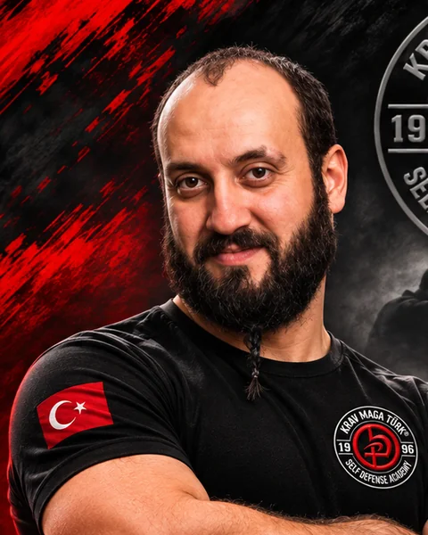

“
Bülent Çetin Hoca ile tanıştıktan sonra ne kadar doğru bir seçim yaptığımı anladım.
Yorumun tamamını oku
Krav Maga'nın etkili bir dövüş sistemi olduğunu biliyordum ve eğitim almaya karar verdim. Bülent Çetin Hoca ile tanıştıktan sonra ne kadar doğru bir seçim yaptığımı anladım.